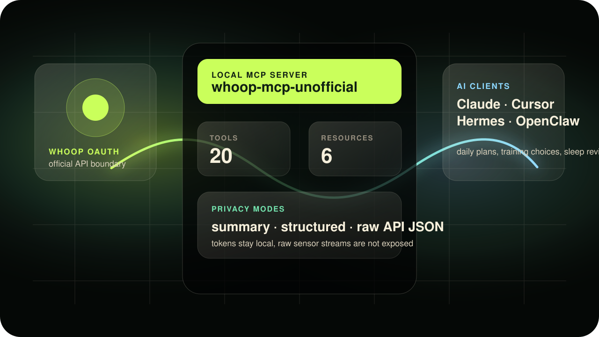

Read the signal
Recovery, sleep, strain, workouts and profile data come from your authorized WHOOP account.
whoopmcp.vercel.app · open source · unofficial
WHOOP MCP is a local-first bridge that lets MCP-aware assistants understand your WHOOP recovery, sleep, strain and workouts. Not another dashboard: a safer way for your agent to reason about training, recovery, focus and sleep.
npx -y whoop-mcp-unofficial setup
The product idea
Most health data stops at a chart. This bridge gives your assistant enough context to help you make a cleaner decision today.
Recovery, sleep, strain, workouts and profile data come from your authorized WHOOP account.
The MCP server turns raw endpoints into concise summaries your assistant can reason about.
Your AI can suggest whether to push, maintain, deload, protect sleep or investigate a pattern.
Data boundary
The bridge uses the official WHOOP OAuth API. It can expose the full API payload when you opt in, but it does not claim access to continuous sensor streams.
Recovery, HRV, resting heart rate, sleep stages, cycles, strain, workouts, heart-rate zones, profile and body measurements.
privacy_mode=raw returns the upstream JSON from supported WHOOP endpoints. It is opt-in because health data is sensitive.
Continuous or second-by-second heart-rate samples are not available through the official WHOOP API, so they are outside this MCP today.
Local-first architecture
Your agent gets useful context, not your secrets. WHOOP OAuth stays inside the official API boundary, tokens stay local, and the MCP exposes clear tools/resources instead of vague scraped data.
whoop_capabilities explains tools, limits and privacy modes.

Questions people ask first
A good health-data bridge should be explicit about what it can read, what it cannot read, and where the trust boundary sits.
No. raw means the full JSON returned by supported WHOOP API endpoints. It does not mean continuous heart-rate samples, accelerometer data or raw device telemetry.
Start with whoop_capabilities, then whoop_connection_status, then whoop_daily_summary or whoop_weekly_summary.
WHOOP credentials and tokens stay on your machine under ~/.whoop-mcp/. Tools intentionally do not return OAuth token values.
No. It gives recovery, sleep, training and performance context for your own agent workflows. It is not diagnosis, treatment or emergency monitoring.
Guided setup
The workflow is intentionally calm: create a WHOOP app, run three commands, add one MCP server to your AI client.
Create a WHOOP Developer app, paste the credentials into setup, authorize once in the browser, then use the MCP config.
Copy the delegation prompt below. It tells your assistant exactly what to install, what not to expose, and how to verify safely.
Jump to agent promptOpen the WHOOP Developer Dashboard, create an app, and use the exact values below.
http://127.0.0.1:3000/callback
read:recovery read:cycles read:workout read:sleep read:profile read:body_measurement
After saving, WHOOP gives you a Client ID and Client Secret. You will paste them into the local installer.
Open WHOOP Developer DashboardThe CLI collects your app credentials, opens WHOOP in your browser, then verifies that the bridge is healthy.
npx -y whoop-mcp-unofficial setup
npx -y whoop-mcp-unofficial auth
npx -y whoop-mcp-unofficial doctorThe authorization callback happens on 127.0.0.1. Your tokens are written locally, not pasted into chat.
Use it with Claude Desktop, Cursor, Windsurf, Hermes, OpenClaw or any client that supports MCP over stdio.
{
"mcpServers": {
"whoop": {
"command": "npx",
"args": ["-y", "whoop-mcp-unofficial"]
}
}
}Prompts that feel like a coach
These prompts help your assistant turn WHOOP context into a concrete training, recovery or focus decision.
Use my latest WHOOP recovery, sleep and strain. Tell me if today should be a push, maintain or recovery day, then give me one action that matters most tonight.
Review my last 3 days of workouts and recovery. Recommend today's training intensity and explain the tradeoff in plain English.
Review my last 7 days of WHOOP data. Identify the biggest bottleneck, the best signal, and a simple plan for next week.
Look at the last 14 days. If my recovery dropped, find the strongest likely signal behind it and show the numbers without giving medical advice.
Trust boundary
WHOOP data is personal. The bridge is designed so assistants get useful health context without needing to see OAuth tokens or write back to your account.
Only WHOOP read scopes are requested. The bridge does not create, edit or delete WHOOP data.
Token files live under ~/.whoop-mcp/ with user-only permissions.
Summaries are the main path. Raw payloads should be explicit, not accidental.
This is a developer tool for reflection and coaching context, not diagnosis or treatment.
For AI agents
If a non-technical user wants their assistant to install the bridge, this prompt gives the agent enough structure to proceed safely.
Install the unofficial WHOOP MCP server for me.
Repository: https://github.com/davidmosiah/whoop-mcp.
Help me create a WHOOP developer app with:
- Redirect URI: http://127.0.0.1:3000/callback
- Read-only WHOOP scopes
Run setup, auth and doctor with npx.
Add the MCP config to my client.
Verify the connection.
Keep tokens local and never print secrets.For builders
Built by David Mosiah for people exploring practical AI-agent systems around personal health, recovery and performance. The project is small enough to understand, but serious about privacy, OAuth and agent ergonomics.
Open source health agents
Star the repo, inspect the implementation, open issues or adapt the bridge for your own agent workflow.